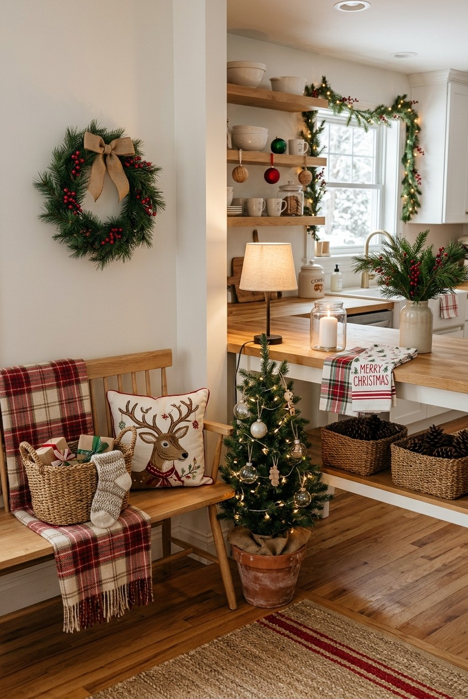

AI-generated inspiration image. The products below are similar items, not exact matches.
Festive Kitchen Nook Ideas
Bring warm holiday charm to your kitchen and entryway with these easy styling finds.

AI-generated inspiration image. The products below are similar items, not exact matches.
Bring warm holiday charm to your kitchen and entryway with these easy styling finds.